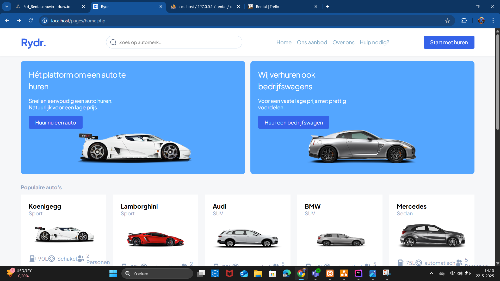
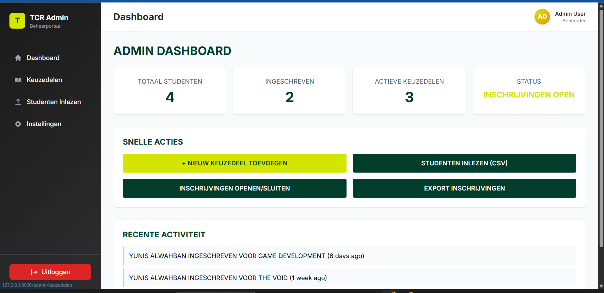
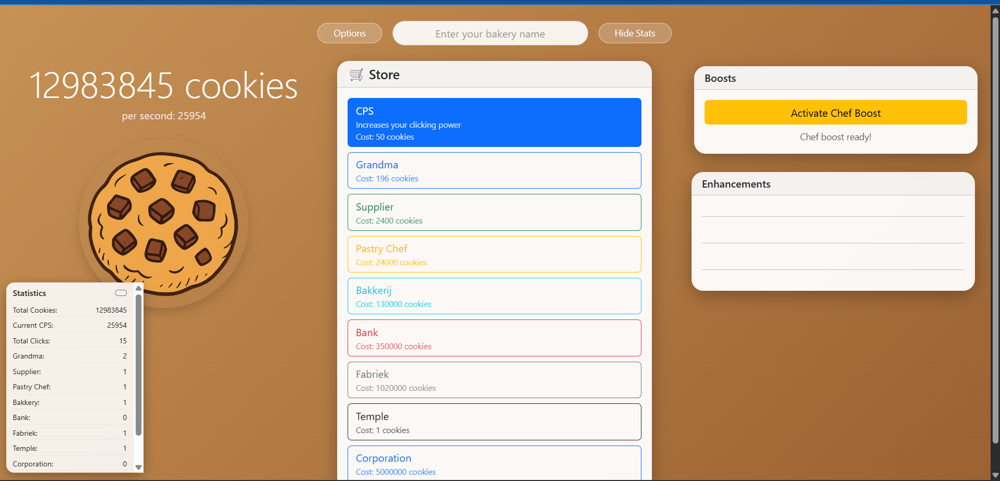

Mijn Projecten

Rental Cars
Rental Cars project was een 1ste keer werken aan een php database project.
Deze had ik samen met een klasgenoot gedaan.
Het was intressant project om weer verder te gaan met database om alles goed te koppelen en invullen
Rental Cars Github

Administratie system keuzedeel
School Administratie systeem was mijn 1ste Laravel database project.
Deze project was een hele interessante, omdat ze gingen de beste project echt als een basis gebruiken voor school administratie voor keuzedelen.
Wat deze project inhoud is dat we een administrate system moest maken voor keuzedelen.
We moesten 2 aparte variatie maken 1 voor school zelf en 1 voor de student die ze gebruiken.
Daar naast moest we maken zodat ze een nieuw keuzedeel konden maken, activie of niet, Overzicht over hoeveel student zijn aangeschrijven en alles
Administratie keuzedeel Github

Cookie Clicker
Cookie Clicker was een javascript project we moest een systeem maken waar we een autoclicker hebben,
en speciale functie voor elke autoclicker.
En upgrades om verder te gaan
Cookie Clicker